3.7. Naive Bayes¶
Naive Bayes algorithms are a set of supervised learning methods
based on applying Bayes’ theorem with the “naive” assumption of independence
between every pair of features. Given a class variable  and a
dependent set of feature variables 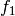 through 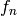, Bayes’
theorem states the following relationship:
and a
dependent set of feature variables 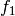 through 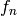, Bayes’
theorem states the following relationship:
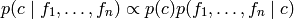
Using the naive independence assumption this relationship is simplified to:

so we can use Maximum A Posteriori (MAP) estimation to estimate 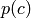 and 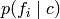.
The different naive Bayes classifiers differ by the assumption on the distribution of .
In spite of their apparently over-simplified assumptions, naive Bayes classifiers have worked quite well in many real-world situations, famously document classification and spam filtering. They requires a small amount of training data to estimate the necessary parameters. (For theoretical reasons why naive Bayes works well, and on which types of data it does, see the references below.)
Naive Bayes learners and classifiers can be extremely fast compared to more sophisticated methods. The decoupling of the class conditional feature distributions means that each distribution can be independently estimated as a one dimensional distribution. This in turn helps to alleviate problems stemming from the curse of dimensionality.
References:
- H. Zhang (2004). The optimality of naive Bayes. Proc. FLAIRS.
3.7.1. Gaussian Naive Bayes¶
GaussianNB implements the Gaussian Naive Bayes algorithm for classification. The likelihood of the features is assumed to be gaussian:
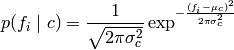
The parameters of the distribution, 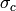 and 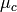 are estimated using maximum likelihood.
Examples:
- example_naive_bayes.py
3.7.2. Multinomial Naive Bayes¶
MultinomialNB implements the Multinomial Naive Bayes algorithm for classification.
Multinomial Naive Bayes models the distribution of words in a document as a
multinomial. The distribution is parametrized by the vector
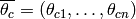 where
is the class of document,  is the size of the vocabulary and 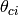
is the probability of word 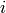 appearing in a document of class .
The likelihood of document 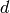 is,
is the size of the vocabulary and 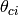
is the probability of word 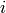 appearing in a document of class .
The likelihood of document 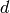 is,
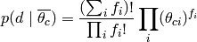
where 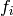 is the frequency count of word . It can be shown that the maximum posterior probability is,
![\hat{c} = \arg\max_c [ \log p(\overline{\theta_c}) + \sum_i f_i \log \theta_{ci} ]](../_images/math/fa5b9c08b0b36122fd12a8f554e2f6951dbaffd3.png)
The vector of parameters 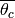 is estimated by a smoothed version of maximum likelihood,
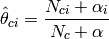
where 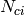 is the number of times word appears in a document
of class and 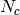 is the total count of words in a document
of class . The smoothness priors 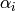 and their sum
 account for words not seen in the learning samples.
account for words not seen in the learning samples.
3.7.3. Bernoulli Naive Bayes¶
BernoulliNB implements the naive Bayes training and classification algorithms for data that is distributed according to multivariate Bernoulli distributions. It requires samples to be represented as binary-valued/boolean feature vectors; if handed any other kind of data, it binarizes it (depending on the binarize parameter).
In the case of text classification, word occurrence vectors (rather than word count vectors) may be used to train and use this classifier. BernoulliNB might perform better on some datasets, especially those with shorter documents, because it explicitly penalizes the non-occurrence of words/features in a dataset where MultinomialNB would only notice a zero count, but for text classification MultinomialNB will generally be better. It is advisable to evaluate both models, if time permits.
References:
- C.D. Manning, P. Raghavan and H. Schütze (2008). Introduction to Information Retrieval. Cambridge University Press, pp. 234-265.
- A. McCallum and K. Nigam (1998). A comparison of event models for naive Bayes text classification. Proc. AAAI/ICML-98 Workshop on Learning for Text Categorization, pp. 41-48.
- V. Metsis, I. Androutsopoulos and G. Paliouras (2006). Spam filtering with naive Bayes – Which naive Bayes? 3rd Conf. on Email and Anti-Spam (CEAS).